LGD Dogs
We have two livestock guardian dogs, Anatolian Shepherds that live with and protect our livestock. They are both males named Gunner and Gibbs.
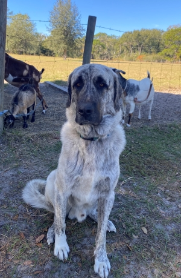
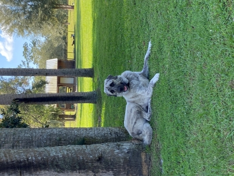
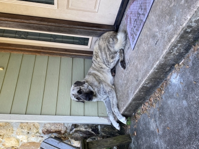
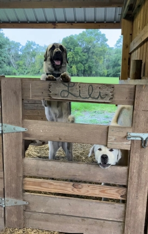
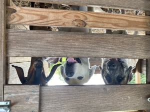
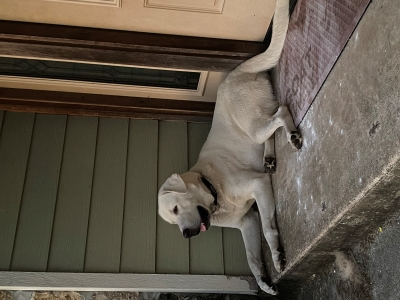
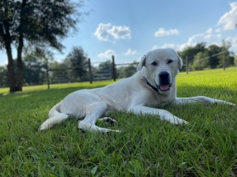
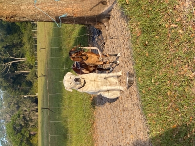
Pets - Dogs, Donkeys, and our Mascot Walker!
We also have two pet dogs named Bubba and Luna that live inside with us, two miniature donkeys named June and Posey(mother and daughter), and our new Wolf Acres farm mascot Walker!
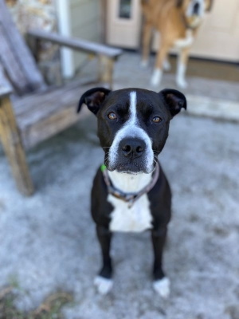
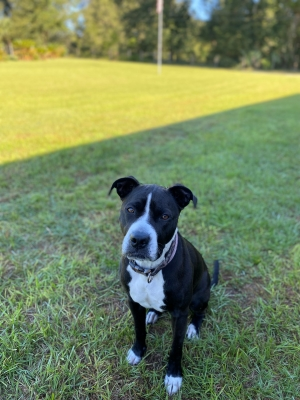
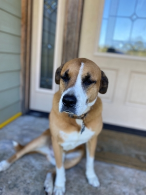
 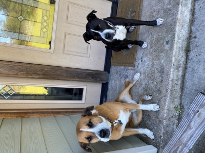
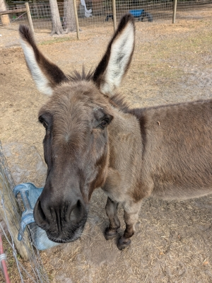
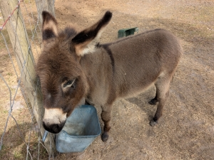
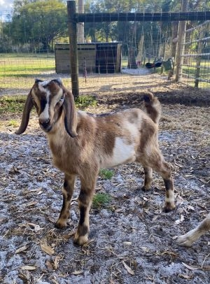
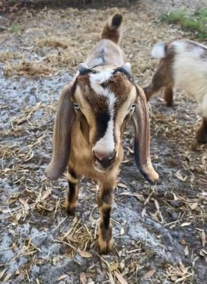
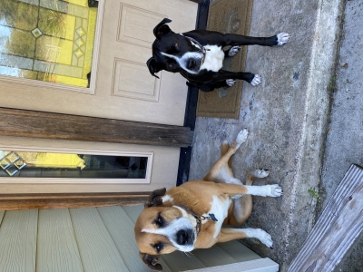
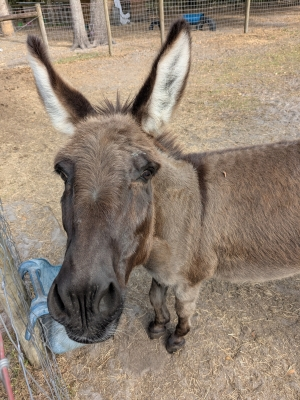
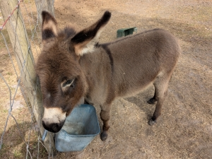
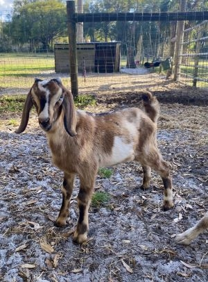
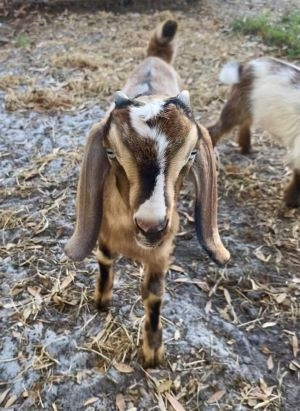
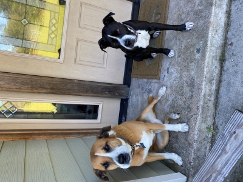
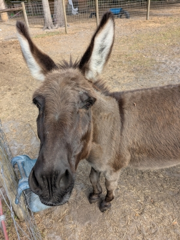
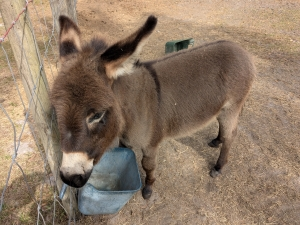
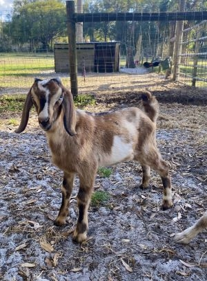
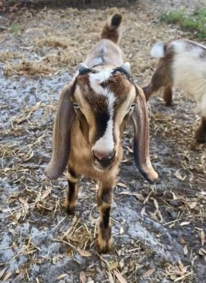